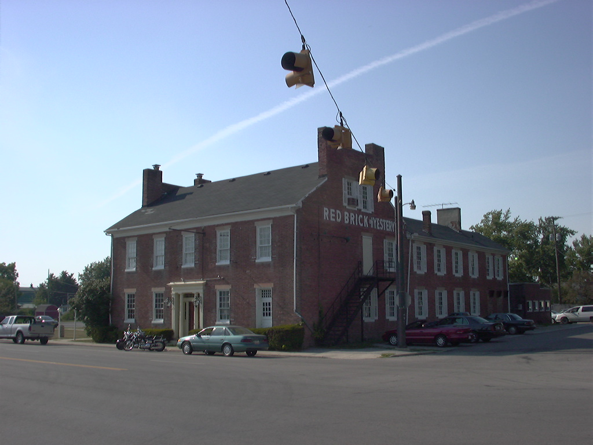
This landmark restaurant was built in rural Madison County in 1836, right around the time the National Road was being laid across the midsection of Ohio. The town of Lafayette was platted only two years earlier. The Minter and Watson families owned the building, which was leased to John McMullen through 1859. He operated it as an inn and tavern, serving travellers on the National Road.
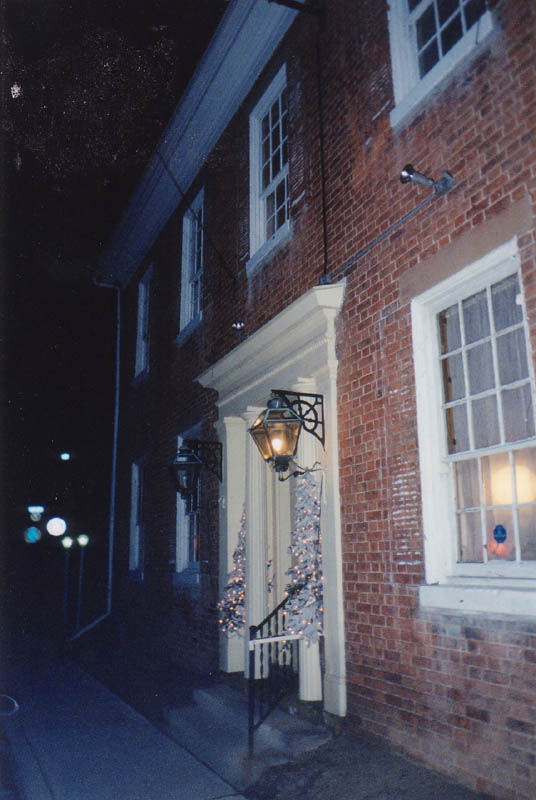
The advent of railroads made stagecoach stops like this one unprofitable. The Red Brick closed to the public in 1859 and served as a residence for members of the Minter and Taylor families. Other families lived in the rear wing, which was rented out, and a school was conducted on the third floor. The Tavern didn't reopen until 1924.
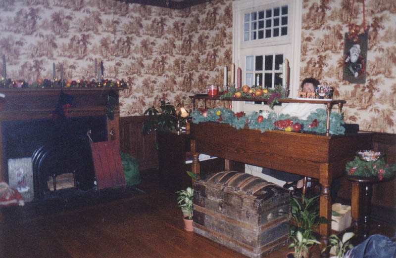
The Red Brick boasts visits from six presidents of the United States over the course of its operation as a restaurant. Steak dinners are named after each of the chief executives who dined here: John Quincy Adams (1825-1829), Martin Van Buren (1831-1835), William Henry Harrison (1841), John Tyler (1841-1845), Zachary Taylor (1849-1850), and Warren G. Harding (1921-1923).
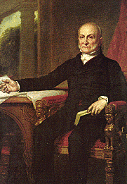
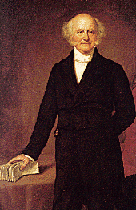
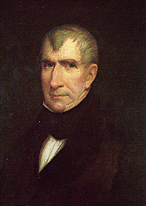
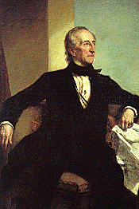
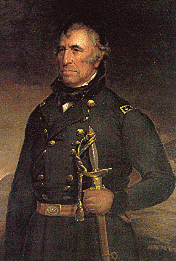
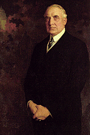
It's interesting to note that none of these guys had very distinguished terms in office. John Quincy Adams and Martin Van Buren were both intelligent and capable presidents who ended up losing their re-election bids. Harrison, Taylor, and Harding died in office before completing a single term--Harrison after only one month in the White House. And John Tyler, who finished Harrison's term, had the unenviable job of being the first Vice President to ascend to the Presidency; he was very unpopular (people referred to him as "His Accidency") and wasn't even considered for renomination in 1844. Maybe it's the curse of the Red Brick Tavern.
Today the Tavern serves moderately expensive dinners in the original dining room. It also features a bar and rental banquet facilities. In the early days you could get a room at the Tavern, but today the upstairs chambers are extra dining rooms.
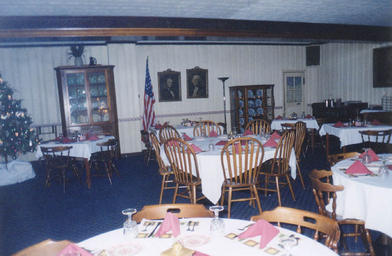
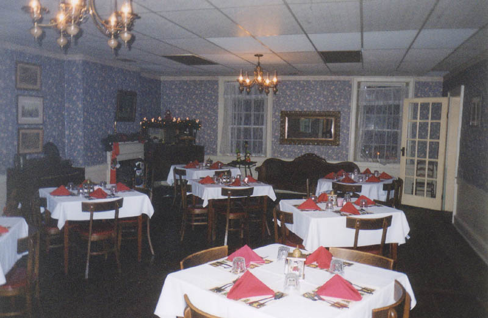
But employees and restaurant patrons aren't the only ones who occupy the Red Brick Tavern at any given time; at least one ghost is supposed to roam the upper floors. She is responsible for the creaking footsteps which are sometimes heard in the dining room. She appears in the upstairs windows and plays with the lights. Sometimes she is heard whispering.
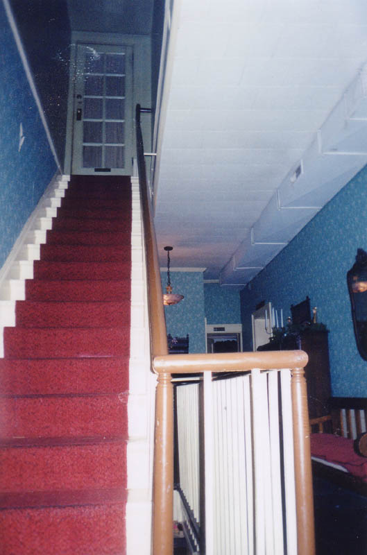
Pictured above is the staircase leading to the third floor. As you might be able to tell, there is a cluster of white spots in the picture, near the top of the stairs. It's hard to say exactly what it is, but I suppose it could be interpreted as a ghost.
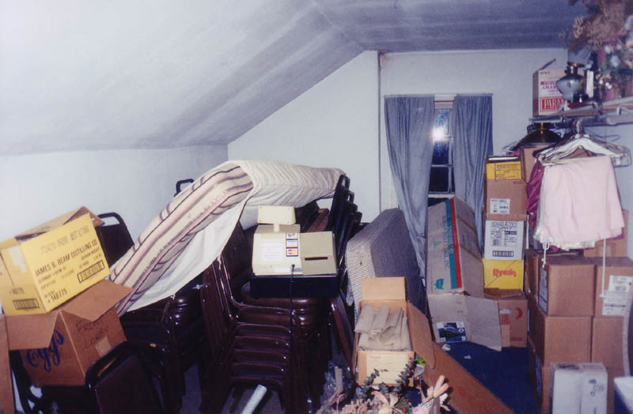
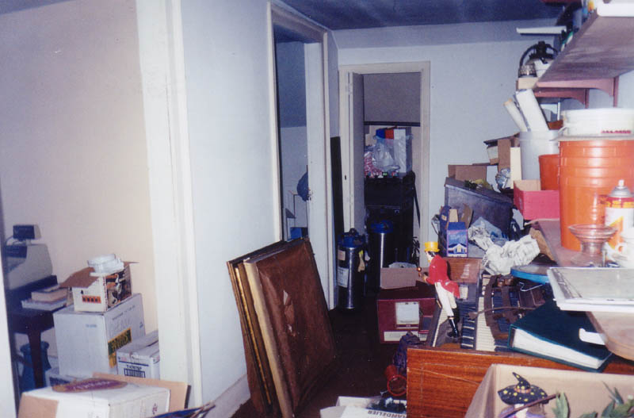
Above you can see the attic rooms, which Katydid and I poked around in during our visit to the Red Brick Tavern in December of 2002. The hostess let us go upstairs, and told us a little about the ghost story attached to the building. It's the classic tale: a woman (presumably one of the Minters) learned that her fiancee had found someone new, became despondent, and killed herself. According to the legend, before the woman committed suicide she embroidered a sampler which now hangs in the second floor hallway. REMEMBER ME, it says. Her ghost is said to be responsible for the fact that the sampler is stained blood red--so dark that it's nearly unreadable.
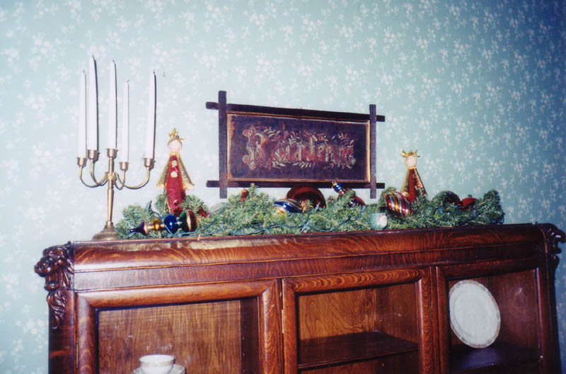
The Red Brick Tavern and its ghost can be found at 1700 Cumberland Street (US 40) in Lafayette. Call 1-800-343-6118 or (740) 852-1474 for reservations. And please let me know if you have any additional information.
Route40.net: The Red Brick Tavern
About.com: The Red Brick Tavern
Back
forgottenohio@yahoo.com